Week 1 · Day 3 — follow the proton and the electron pair
Organic Chemistry 1
About this lecture
You swallow an aspirin tablet. In your stomach (pH ≈ 2) about 97 % of it is the neutral acid. A few minutes later, in your blood (pH 7.4), more than 99.9 % of it is the negatively charged ion. Same molecule, different form, and only the pH changed.
Today we learn to predict that kind of switch:
Proton transfer: curved arrows, and what happens to charges
Conjugate pairs: acid and base differ by exactly one H⁺
Acid strength: pKa, and why the conjugate base decides it
Equilibrium: which side of an acid–base reaction wins
Ionisation: how much is HA and how much is A⁻ at a given pH
Yesterday we used structure to predict boiling points; today the same reading skills predict acidity.
An acid gives H⁺; a base gives an electron pair
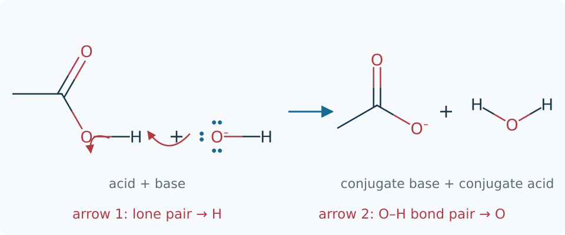
Ethanoic acid transfers a proton to hydroxide, shown with two curved arrows
A Brønsted acid donates H⁺; a base accepts it using a lone pair. Two arrows: the base’s lone pair → H, and the O–H bonding pair → O.
Try it: can a curved arrow start at the H⁺ and point to the base?
No. Curved arrows show where electrons go, and a bare proton has none. Start at a lone pair or a bond; H can only be where an arrow ends.
A nitrogen base: methylamine
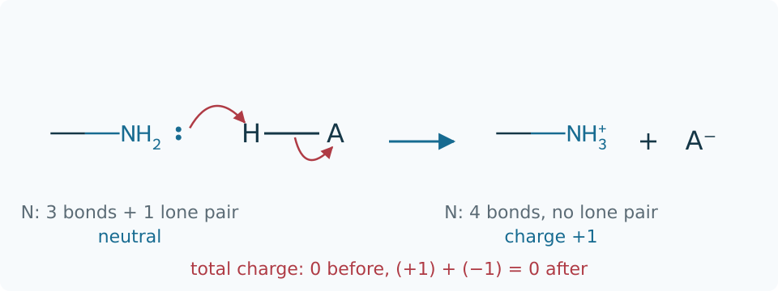
Methylamine’s lone pair takes a proton from a generic acid H–A
Same two arrows. N goes from 3 bonds + 1 lone pair (neutral) to 4 bonds, no lone pair (+1). A keeps the bonding pair and becomes A⁻.
Total charge is conserved: 0 on the left, (+1) + (−1) = 0 on the right.
Conjugate pairs differ by one H⁺
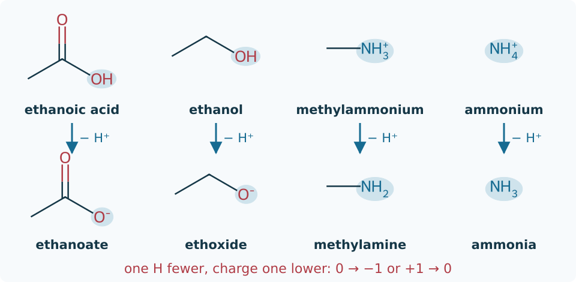
Four acids above their conjugate bases
Removing H⁺ takes away one H and lowers the charge by one. The bonding pair stays behind as a new lone pair.
Try it: what is the conjugate base of CH₃NH₃⁺?
CH₃NH₂ (methylamine), neutral. N goes from four bonds to three bonds plus a lone pair, and +1 drops to 0.
Water can be either
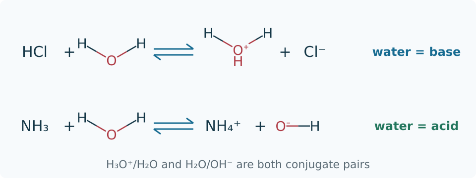
Water accepting a proton from HCl and donating one to ammonia
With a stronger acid, water is the base (→ H₃O⁺). With a stronger base, water is the acid (→ OH⁻). Being an acid or base is a role, not a fixed label.
Try it: a student draws neutral HA + neutral B → A⁻ + BH. What’s wrong?
BH must be BH⁺. Charge is 0 on the left, so A⁻ needs a +1 partner. A neutral BH would make a unit of charge disappear.
pKa: a logarithmic scale of acid strength
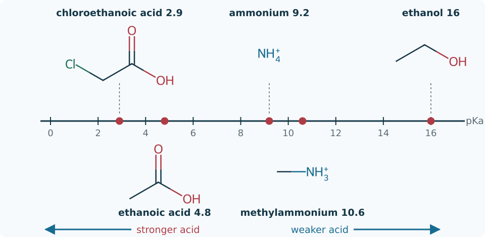
pKa scale with five acids drawn at their positions
\text{p}K_\text{a} = -\log_{10} K_\text{a}
Lower pKa = stronger acid. One pKa unit is a factor of 10 in Ka, so ethanoic acid (4.8) is about 10¹¹ times more acidic than ethanol (16).
Acid strength lives in the conjugate base
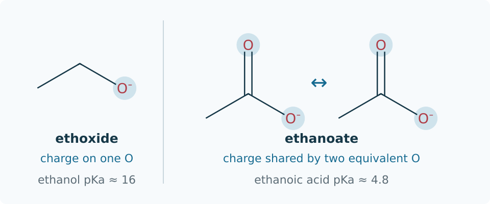
Ethoxide with charge on one oxygen, ethanoate with charge shared by two
Both acids lose H⁺ from O–H. The difference is what’s left: in ethoxide the charge sits on one O, in ethanoate it’s spread over two equivalent O. A more stable conjugate base means a stronger acid.
Resonance: one ion, two drawings
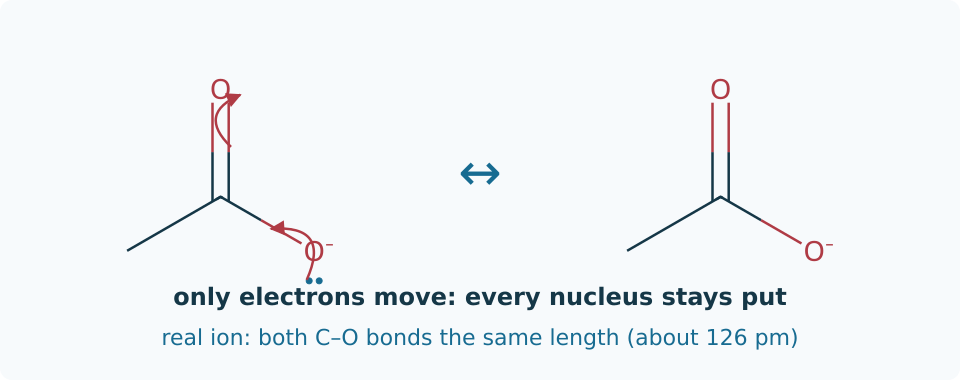
Two resonance contributors of ethanoate related by curved arrows
The ↔︎ means “two drawings of the same thing”, not an equilibrium (⇌). The real ion is a blend: each O carries about −½ and the two C–O bonds are identical.
Try it: a classmate proposes a “second contributor” in which the H moves from one oxygen to the other. Is that resonance?
No. Moving an H moves a nucleus, which makes a different species (a proton transfer). Resonance contributors differ only in where the electrons are drawn.
Induction: electronegative neighbours help
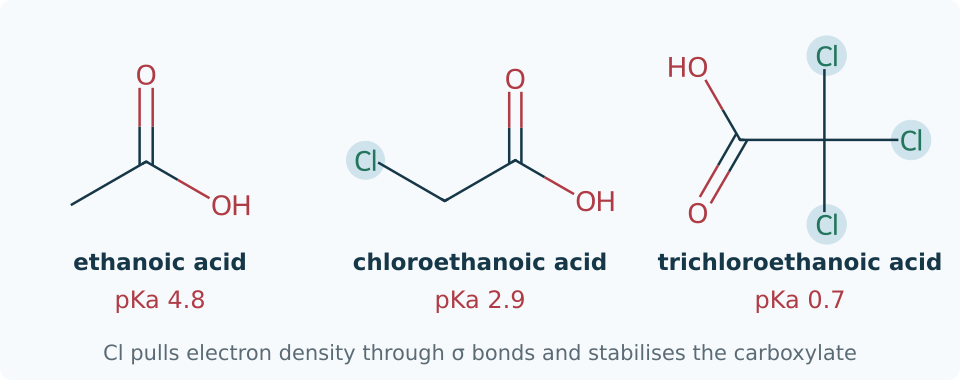
Ethanoic, chloroethanoic and trichloroethanoic acid with their pKa values
Cl pulls electron density through the σ bonds, which stabilises the carboxylate. More Cl, stronger acid. The effect fades quickly with distance.
Which way does an acid–base equilibrium lie?
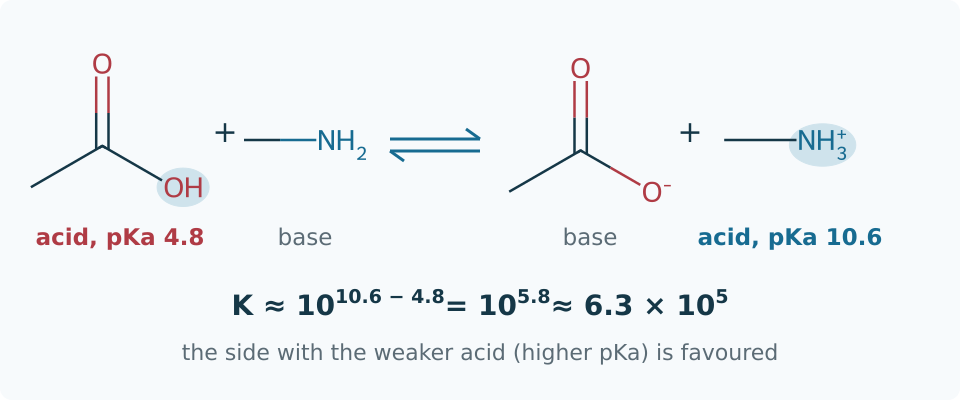
Ethanoic acid and methylamine reacting with pKa values under each acid
Find the acid on each side and compare their pKa values. Equilibrium favours the side with the weaker acid (higher pKa):
K \approx 10^{\,\text{p}K_\text{a}(\text{product acid}) - \text{p}K_\text{a}(\text{reactant acid})}
Reversing the equation, and what K doesn’t tell you
direction
equation
K
forward
CH₃COOH + CH₃NH₂ ⇌ CH₃COO⁻ + CH₃NH₃⁺
105.8 ≈ 6.3 × 10⁵
reverse
CH₃COO⁻ + CH₃NH₃⁺ ⇌ CH₃COOH + CH₃NH₂
10−5.8 ≈ 1.6 × 10⁻⁶
The reverse constant is the reciprocal. And K says where the equilibrium lies, never how fast it gets there.
Try it: a proton transfer has K = 10⁶. How many seconds does it take to reach equilibrium?
K can’t tell you. It compares the two states; speed depends on the pathway and its barrier. (Proton transfers between O and N happen to be very fast, but that’s extra information.)
Try it: pKa 4.8, pH 3.8. Is the acid 10 % ionised?
No, about 9.1 %. r = 0.1, and the fraction is 0.1/(1 + 0.1) = 0.091. A ratio and a fraction have different denominators.
A fraction describes a population
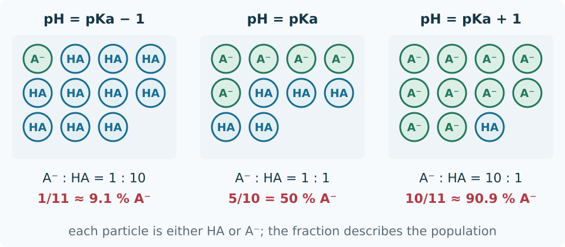
Illustrative particles of HA and A⁻ at three pH values
At pH = pKa, half the molecules are HA and half are A⁻. No molecule is “half deprotonated”: each one is either HA or A⁻ at any instant.
The ionisation curve
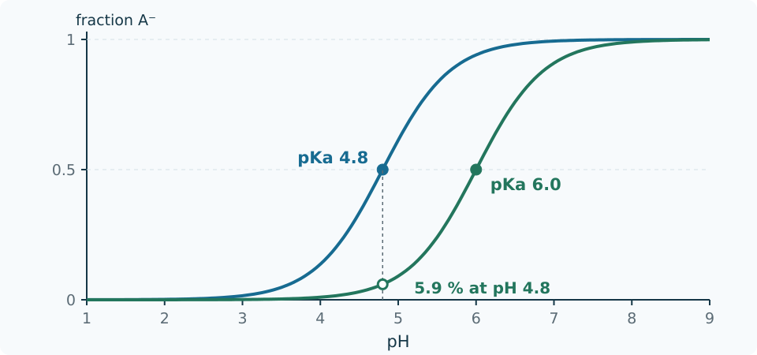
Fraction A⁻ against pH for acids of pKa 4.8 and 6.0
The fraction A⁻ rises with pH and crosses 0.5 exactly at pH = pKa. A higher pKa shifts the whole curve to the right.
Try it: at pH 4.8, how much of each acid is ionised?
pKa 4.8: 50 %. pKa 6.0: about 5.9 %, from 1/(1 + 101.2). At the same pH, the lower-pKa acid is more ionised.
Back to aspirin
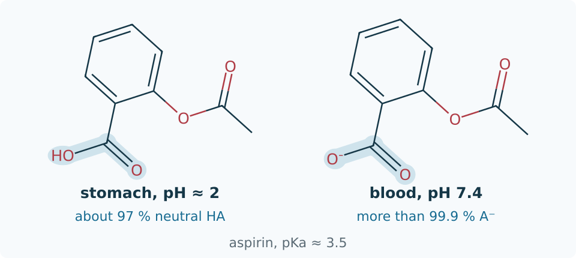
Aspirin as the neutral acid in the stomach and as the carboxylate in blood
pH − pKa
ratio A⁻ : HA
fraction A⁻
stomach, pH 2
2 − 3.5 = −1.5
0.032
≈ 3 %
blood, pH 7.4
7.4 − 3.5 = +3.9
≈ 8000
> 99.9 %
Two groups, two pKa values: glycine
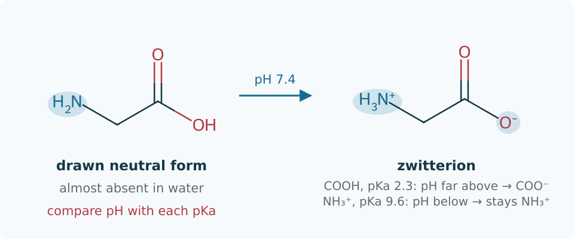
Glycine drawn neutral and as the zwitterion that exists at pH 7.4
Treat each group separately. COOH (pKa 2.3) at pH 7.4 is far above its pKa, so it’s COO⁻. NH₃⁺ (pKa 9.6) is below its pKa, so it stays NH₃⁺.
Try it: at pH 7.4, about what fraction of glycine’s amino groups are NH₂ rather than NH₃⁺?
About 0.6 %. pH − pKa = 7.4 − 9.6 = −2.2, so the ratio NH₂ : NH₃⁺ is 10−2.2 ≈ 0.006.
Where this model stops
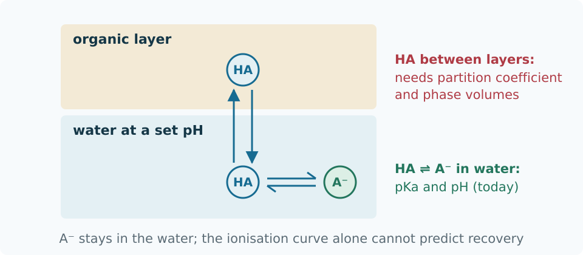
Two-layer extraction showing aqueous ionisation and partition between layers
Our equation describes one acid in dilute water at a chosen pH. It doesn’t give the pH during a titration, and it doesn’t tell you how much ends up in an organic layer.
Try it: at high pH an acid is mostly A⁻. What else would you need to predict how much you recover from an organic extract?
Partition coefficients and the phase volumes, plus the starting amount and any losses. Aqueous ionisation is only one piece.
Mistakes we see every year
mistake
fix
curved arrow starting at H⁺
start at a lone pair or a bond
conjugate base with the same charge as the acid
removing H⁺ lowers the charge by one
“lower pKa = weaker acid”
lower pKa = stronger acid
comparing pKa values of unrelated sites
compare HA on the left with BH⁺ on the right
resonance forms “switching back and forth”
one ion; ↔︎ is not ⇌
ratio 0.1 read as 10 % ionised
fraction = r/(1 + r) = 9.1 %
“half the molecule is deprotonated”
half the molecules are A⁻
a large K means a fast reaction
K gives position, not rate
Summary
concept
key fact
proton transfer
two arrows: lone pair → H, bond pair → atom
conjugate pair
differ by one H⁺; charge changes by one
pKa
lower = stronger; 1 unit = factor of 10
acid strength
judged by conjugate-base stability
stabilisation
resonance (↔︎) and induction (σ bonds)
equilibrium
weaker acid side wins; K ≈ 10ΔpKa
ratio and fraction
r = 10pH − pKa, fraction = r/(1 + r)
midpoint
pH = pKa gives 50 % A⁻
Next: conformations, how molecules twist about single bonds (Day 6). Practice:exercises · self-check